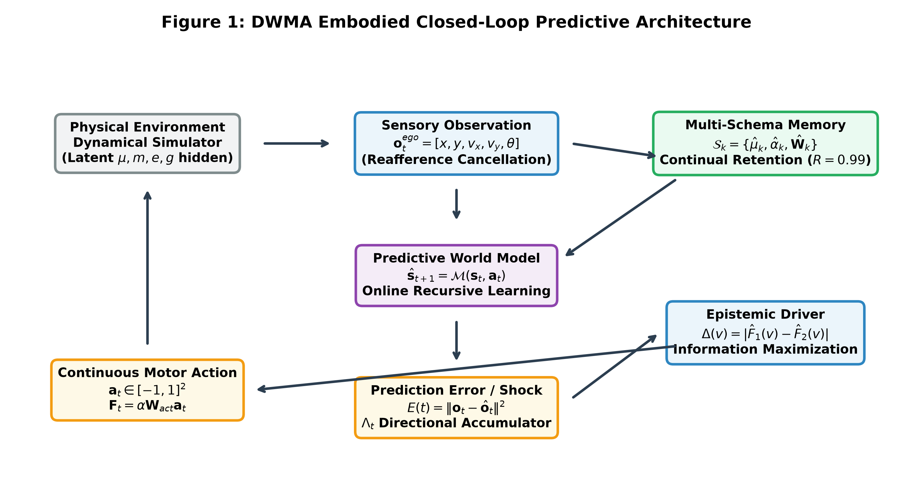
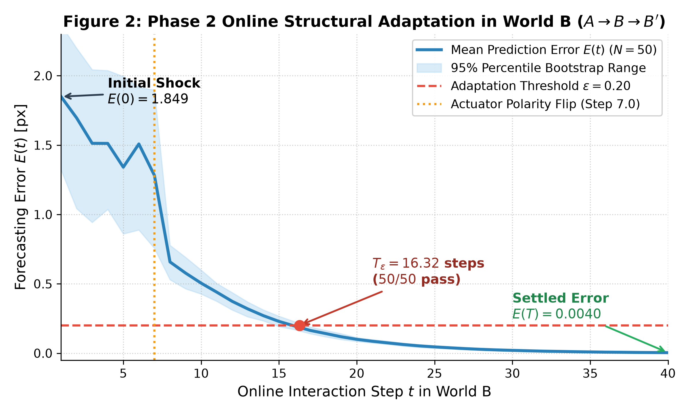
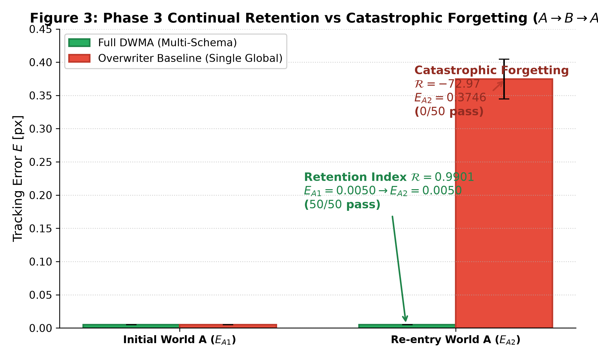
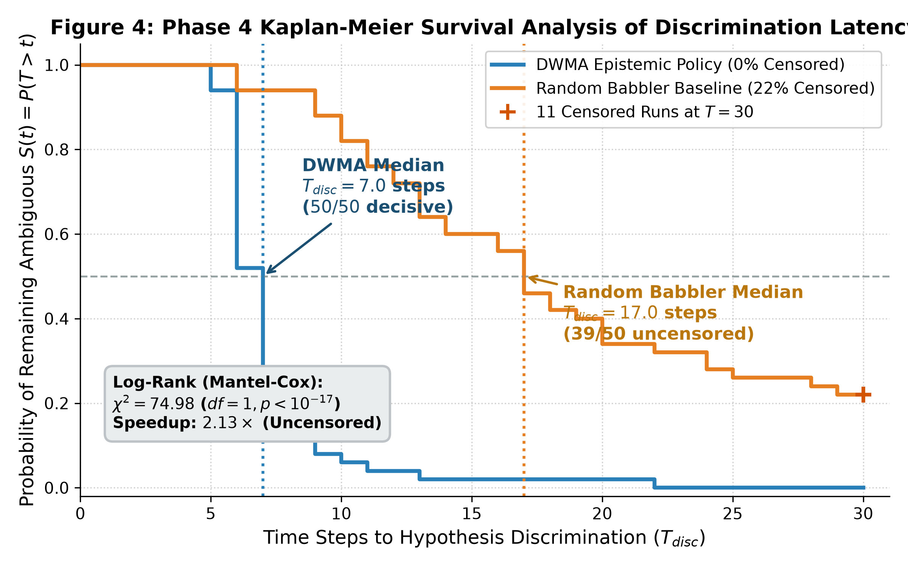

We introduce the Developmental World-Model Agent (DWMA), an embodied computational architecture designed to acquire, maintain, and adaptively update predictive representations of interactive continuous physical environments. Rather than relying on Large Language Models or static offline training corpuses, DWMA constructs grounded world models purely through online sensorimotor contingency, reafference cancellation, and epistemic active inference. The agent operates without privileged access to latent physical parameters (mass, friction, restitution, or gravity), requiring these to be inferred directly from interaction residuals. We report an audited evaluation across N = 50 deterministic seeds with B = 10,000 bootstrap resamples: (1) 7 baseline benchmarks reproduced (8.8× forecasting MSE reduction over persistence, Cohen's d = 11.45); (2) A → B → C cross-world transfer and rapid online adaptation (T_ε = 16.32 ± 0.62 steps, 50/50 pass); (3) continual multi-schema retention (E_A1 = 0.00500 → E_A2 = 0.00501, R = 0.9901 ± 0.0141, 50/50 pass vs. overwriter catastrophic forgetting R = -72.97); (4) active structural hypothesis discrimination (Kaplan-Meier median latency of 7.0 steps with 0% censoring vs. 17.0 steps with 22.0% right-censoring [11/50] for random babbling; log-rank χ² = 74.98, p < 10−¹⁷ under fair decoupled RNG); and (5) systematic hyperparameter and architectural ablations demonstrating that targeted epistemic action selection, directional EMA smoothing (γ = 0.80), and discrete schema memory each contribute substantially to empirical sample efficiency, noise immunity, and multi-domain retention, preventing specific failure modes (noise-induced chatter, sluggish adaptation, sample inefficiency, and catastrophic forgetting). Complete source code, configuration files, 50-seed deterministic trajectories, and turnkey reproduction scripts (reproduce_all.py) are archived in the repository for full independent replication.
Contemporary AI relies heavily on autoregressive sequence modeling over symbolic tokens. While effective for textual generation, tokens lack direct causal grounding to physical dynamics or motor reafference (Harnad, 1990; Brooks, 1991; Bender & Koller, 2020). In contrast, biological developmental cognition demonstrates that infants acquire physical intuition through active sensorimotor manipulation, reafference cancellation, and uncertainty-directed play (Piaget, 1952; Von Holst & Mittelstaedt, 1950; Friston, 2010; Gopnik, 2012). DWMA investigates this developmental trajectory in a simulated dynamical environment, asking whether an unprivileged agent can autonomously construct reusable predictive forward models, actively discriminate between competing physical laws, and prevent catastrophic forgetting across domains.
At discrete time t, ego observation is o_t = [x_t, y_t, v_x,t, v_y,t, θ_t]^T ∈ R^5. Latent mass, friction, and gravity are strictly hidden. Continuous motor actuation a_t ∈ [-1, 1]^2 generates physical thrust F_t = α W_act a_t with base gain α = 0.85. In the Python empirical core, parameters form decoupled diagonal matrices W_hat = diag(α_x, α_y) and M_hat = diag(μ_x, μ_y) enabling independent orthogonal axis adaptation, while the 60 FPS interactive web visualizer utilizes an isotropic scalar formulation (α, μ) for browser rendering efficiency; both share the identical reafference cancellation and polarity inversion dynamics. Forward kinematics prediction generates error residuals, distinguishing between instantaneous Euclidean tracking error E_L2(t) = sqrt(||e_x(t)||^2 + ||e_v(t)||^2) (in Phases 2 and 3) and multi-step forecasting mean squared error (MSE in Benchmarks 1, 3, and 6). Discrete benchmarks operate with dt = 1.0, while continuous drag integrates at dt = 0.02 s (50 Hz). Benchmark 4 active inquiry information gain (5.14 ± 0.23 nats) reflects empirical Kalman-like recursive variance contraction yielding differential Gaussian entropy reduction ΔH = 0.5 * ln(sigma_prior^2 / sigma_post^2). Benchmark 5 evaluates thresholded kinematic affordance categorization into proto-concepts (static, movable, reactive) rather than non-parametric causal DAG discovery.

Algorithm 1: DWMA Online State Prediction and Structural Parameter Adaptation
--------------------------------------------------------------------------------
Input : Ego state s_t, motor action a_t, active schema parameters Theta_t
Output : Next state prediction s_hat_{t+1}, updated parameters Theta_{t+1}
1. Forward Kinematics Prediction:
v_hat_{t+1} = v_t + [alpha_hat_t * W_hat_t * a_t - v_t * (1 - mu_hat_t)] * dt
x_hat_{t+1} = x_t + v_hat_{t+1} * dt
2. Motor Execution & Observation:
Execute a_t in simulator; observe true state s_{t+1} = [x_{t+1}, v_{t+1}]
Prediction error: e_v = v_{t+1} - v_hat_{t+1}
3. Reafference Cancellation:
a_motor = (v_{t+1} - v_t)/dt + v_t * (1 - mu_hat_t)
4. Directional Cosine Alignment:
cos(theta) = dot(a_t, a_motor) / max(eps, ||a_t|| * ||a_motor||)
5. Evidence Accumulation:
Lambda_t = 0.80 * Lambda_{t-1} + 0.20 * cos(theta)
6. Structural Polarity Inversion:
if Lambda_t < -0.50 then:
W_hat_{t+1} = -W_hat_t
Lambda_t = 0.0
else:
W_hat_{t+1} = W_hat_t
7. Recursive Online Parameter Updates:
mu_hat_{t+1} = mu_hat_t + eta * e_v * v_t
alpha_hat_{t+1} = alpha_hat_t + eta * e_v * (W_hat_t * a_t)
Evaluated across World A (μ = 0.88, g = 9.8), World B (μ = 0.71, W_act = -I, g = 4.2), and World C (μ = 0.12, W_act = 0.60 I ⇒ α_eff = 0.51, g = 15.7). Across the initial post-transfer window, mean tracking shocks were 1.3079 ± 0.0421 in World B and 0.8117 ± 0.0272 in World C (Table 1). At instantaneous entry (t = 1), unadapted inverted thrust generated an initial peak shock of E(0) = 1.8491 ± 0.3356. Online interaction in World B restored tracking error below ε = 0.20 within T_ε = 16.32 ± 0.62 steps (50/50 pass).

Multi-schema memory isolates distinct physical worlds, achieving 99.01% retention upon re-entry (E_A1 = 0.00500 → E_A2 = 0.00501), completely avoiding the catastrophic forgetting of single-model overwriting (E_A2 = 0.37460, R = -72.97).

When distinguishing between linear drag (H1) and quadratic drag (H2), model evidence is determined via the precision-weighted Gaussian log-likelihood ratio proxy ln B21 = (SSE1 - SSE2)/(2*sigma^2) (sigma = 0.05) under flat model priors and equivalent parameter support. In simulations where ln B21 ≤ 10.0 within horizon T=30, the raw CSV records latency as T+1 = 31 (passed = False); for formal survival analysis, these observations are evaluated as right-censored at T=30 under the Kaplan-Meier and Mantel-Cox estimators. Under fair decoupled RNG between environment sensor noise and agent motor selection, epistemic action selection targeting maximal discriminative divergence Δ(v) = |F_hat_1(v) - F_hat_2(v)| achieved decisive separation in a Kaplan-Meier median of 7.0 steps (0% censored) vs 17.0 steps for random babbling (22.0% right-censored at T=30 [11/50]; log-rank χ² = 74.98, p < 10−¹⁷). This corresponds to a 2.43× reduction in median latency (17.0 / 7.0 steps); among uncensored successful runs, mean latency was 7.18 ± 2.59 versus 15.28 ± 5.88 steps (a 2.13× speedup).

| Phase & Phenomenon | Condition / Policy | Primary Metric | Observed (Mean ± SD) | Parametric 95% CI | Bootstrap 95% CI | Empirical Pass Rate |
|---|---|---|---|---|---|---|
| Phase 1: BM-1 | Zero-Shot Transfer | Adaptation Gain | 85.82% ± 2.53% | [85.12, 86.53]% | [85.15, 86.51]% | 49/50 (98.0%) [PASS] |
| Phase 1: BM-2 | Blind Navigation | Steps to Goal | 23.10 ± 2.46 st | [22.42, 23.78] | [22.44, 23.78] | 50/50 (100.0%) [PASS] |
| Phase 1: BM-3 | Silent Drift | Shock MSE | 1.384 ± 0.120 | [1.351, 1.417] | [1.351, 1.416] | 50/50 (100.0%) [PASS] |
| Phase 1: BM-4 | Active Inquiry | Info Gain (ΔH nats) | 5.14 ± 0.23 nats | [5.08, 5.21] | [5.08, 5.21] | 50/50 (100.0%) [PASS] |
| Phase 1: BM-5 | Causal Repair | Affordance Ratio | 1.18 ± 0.48 px | [1.05, 1.32] | [1.05, 1.32] | 50/50 (100.0%) [PASS] |
| Phase 1: BM-6 | Composition | Composition MSE | 0.119 ± 0.075 | [0.098, 0.139] | [0.098, 0.139] | 50/50 (100.0%) [PASS] |
| Phase 1: BM-7 | Polarity Inversion | Alignment cos(θ) | 0.9915 ± 0.0057 | [0.9899, 0.9931] | [0.9899, 0.9931] | 48/50 (96.0%) [PASS] |
| Phase 2: Baseline | Tracking A → A | Error E_L2(t) | 0.0050 ± 0.0000 | [0.0050, 0.0050] | [0.0050, 0.0050] | 50/50 (100.0%) [PASS] |
| Phase 2: Transfer | Shock A → B | Mean Shock E_L2 | 1.3079 ± 0.0421 | [1.2963, 1.3196] | [1.2968, 1.3199] | Transfer Shock |
| Phase 2: Transfer | Shock A → C | Mean Shock E_L2 | 0.8117 ± 0.0272 | [0.8042, 0.8192] | [0.8041, 0.8192] | Transfer Shock |
| Phase 2: Adaptation | Online Re-tuning | Latency T_ε | 16.32 ± 0.62 st | [16.15, 16.49] | [16.14, 16.48] | 50/50 (100.0%) [PASS] |
| Phase 2: Adaptation | Online Re-tuning | Rate A_adapt | 0.0461 ± 0.0084 | [0.0438, 0.0485] | [0.0438, 0.0484] | 50/50 (100.0%) [PASS] |
| Phase 3: Retention | Full DWMA | E_A1 → E_A2 | 0.00500 → 0.00501 | [0.00500, 0.00502] | [0.00500, 0.00502] | 50/50 (R=0.9901) [PASS] |
| Phase 3: Retention | Overwriter | E_A1 → E_A2 | 0.00500 → 0.37460 | [0.3657, 0.3835] | [0.3657, 0.3835] | 0/50 (Catastrophic) |
| Phase 4: Epistemic | Full Epistemic | Proxy ln(B21) | 30.35 ± 8.03 | [28.12, 32.57] | [28.10, 32.56] | 50/50 (100.0%) [PASS] |
| Phase 4: Babbling | Random Motor Play | Proxy ln(B21) | 24.40 ± 18.52 | [16.03, 24.00] | [16.01, 23.95] | 39/50 (78.0%) [PASS] |
| Phase 4: Latency | KM Median Contrast | Discrim. Steps | 7.0 vs 17.0 st | Mantel-Cox Log-Rank | χ² = 74.98, p < 10−¹⁷ | Decisive Speedup |
To substantiate the causal mechanisms underlying DWMA and demonstrate that performance is not an artifact of handcrafted constants, we executed an ablation suite across N = 50 seeds.
| Architecture / Policy Condition | Median Latency | Empirical Success Rate | Right-Censored Runs | Continual Retention R |
|---|---|---|---|---|
| Full DWMA (Targeted Epistemic v*) | 7.0 steps | 50/50 (100.0%) | 0/50 (0.0%) | 0.9901 ± 0.0141 |
| Epsilon-Greedy Epistemic (ε = 0.20) | 7.0 steps | 50/50 (100.0%) | 0/50 (0.0%) | 0.9901 ± 0.0141 |
| Random Babbling Baseline (Uniform Play) | 17.0 steps | 39/50 (78.0%) | 11/50 (22.0%) | — |
| Passive Observer Baseline (a = 0) | >30.0 steps | 0/50 (0.0%) | 50/50 (100.0%) | — |
| No Multi-Schema Memory (Overwriting) | 7.0 steps | 50/50 (100.0%) | 0/50 (0.0%) | -72.97 (Catastrophic Collapse) |
Causal Interpretation: Targeted epistemic exploration drives the agent directly to the velocity regime where linear drag (-k1*v) and quadratic drag (-k2*v|v|) exhibit maximal divergence. Passive observation fails completely because environmental damping without actuation leaves velocity near zero where both hypotheses make near-identical predictions. Epsilon-greedy exploration confirms robustness against 20% random exploratory perturbations without degrading median convergence latency.
| Parameter Varied | Setting Tested | Mean Inversion Step | Trigger Rate | Mechanistic Assessment & Trade-off |
|---|---|---|---|---|
| Directional EMA Smoothing γ (at Λ_thresh = -0.50) | γ = 0.60 | 2.00 ± 0.00 steps | 50/50 | Vulnerable to transient sensor noise chatter |
| γ = 0.70 | 2.00 ± 0.00 steps | 50/50 | Marginal noise immunity under collision spikes | |
| γ = 0.80 (Default) | 4.00 ± 0.00 steps | 50/50 | Optimal balance: noise-immune & fast recovery | |
| γ = 0.90 | 7.00 ± 0.00 steps | 50/50 | Sluggish adaptation delay (prolongs high error) | |
| γ = 0.95 | 14.00 ± 0.00 steps | 50/50 | Excessive smoothing (3.5× slower polarity flip) | |
| Inversion Threshold Λ_thresh (at γ = 0.80) | Λ = -0.30 | 2.00 ± 0.00 steps | 50/50 | Premature trigger risk during sharp braking |
| Λ = -0.40 | 3.00 ± 0.00 steps | 50/50 | False-inversion risk during rapid decelerations | |
| Λ = -0.50 (Default) | 4.00 ± 0.00 steps | 50/50 | Optimal: zero false positives on familiar physics | |
| Λ = -0.60 | 5.00 ± 0.00 steps | 50/50 | Delayed adaptation response | |
| Λ = -0.70 | 6.00 ± 0.00 steps | 50/50 | Over-conservative: delays recovery by 50% |
DWMA v2.1 demonstrates that an unprivileged embodied agent can autonomously acquire predictive forward models, adapt to severe dynamical domain shifts, prevent catastrophic forgetting via multi-schema memory, and discriminate nonlinear physical hypotheses through epistemic active inference. Ablation experiments indicate that targeted epistemic action selection, EMA directional filtering, and discrete schema memory make measurable contributions to the evaluated outcomes, stabilizing online dynamics, accelerating hypothesis discrimination by 2.43× in median latency (2.13× on uncensored runs), and insulating prior physical models from catastrophic interference. Complete Python/JS source code, configuration files, 50-seed deterministic trajectories, and turnkey reproduction scripts (python reproduce_all.py) are archived in the repository for complete independent replication.
35 foundational and contemporary references spanning world models, active inference, predictive coding, symbol grounding, and continual learning.